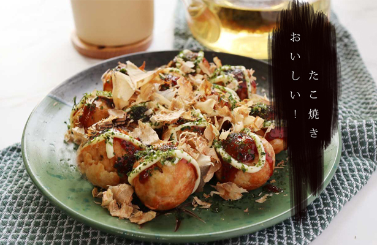
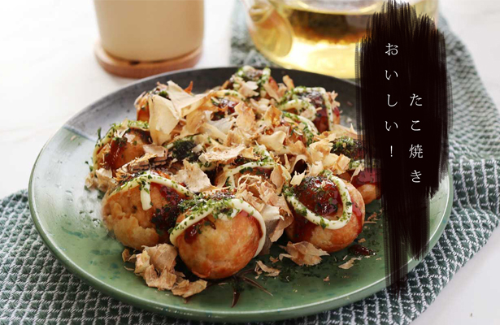

El paladar kansai se fusiona con el criollo en una mezcla sin fin de sabores y experiencias. Del takoyaki al chimichurri, de la birra al sake, en Shin'ya Shokudo vas a vivir una experiencia gastronómica sin igual.
leer másNuestro chef, Takehiro Ohno nació en la provincia norte de Hokkaido, Japón, dónde egresó como Nutricionista y como Chef en el Instituto Tsuji Gakuen. Su camino por deleitar al prójimo comenzó con la cocina vasca. Que luego lo acercó a Buenos Aires donde, en el año 2023 conoció a Francisco, Adrián y Luciana que le hicieron una web de su restaurant.
leer másDe forma progresiva abrimos nuestro calendario de reservas, diariamente mostramos nuevas fechas disponibles. Para solicitar una reserva en nuestro calendario, elija una fecha disponible y envíe su petición. Una vez finalizado el proceso, recibirá la confirmación, la cuál deberá mostrar al ingresar.
reservarNuestro menú se compone de pocos platos que se renuevan mensualmente para brindar una experiencia única.

 
